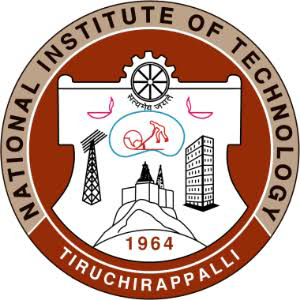
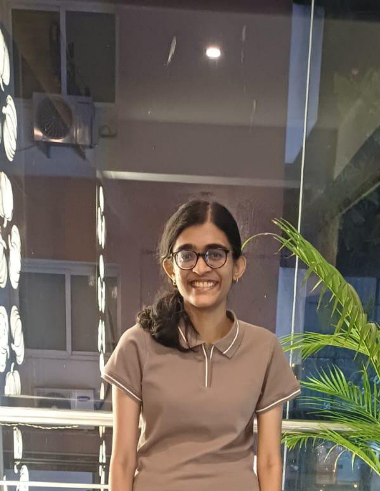
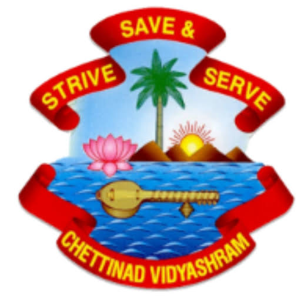
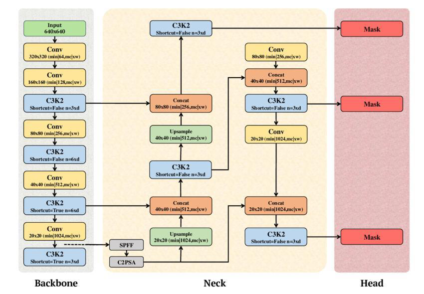
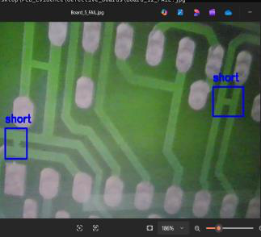
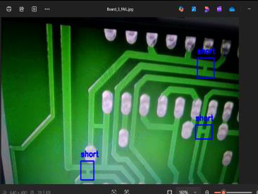
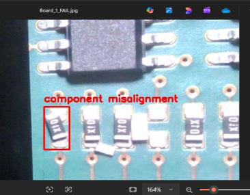
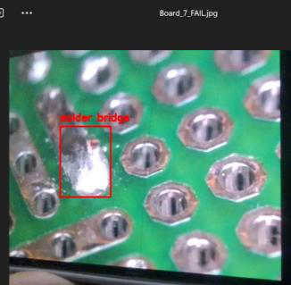
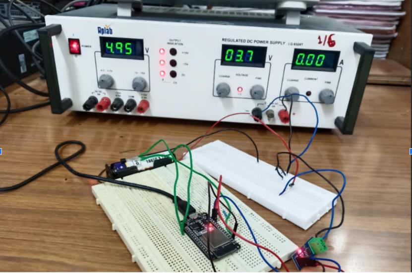
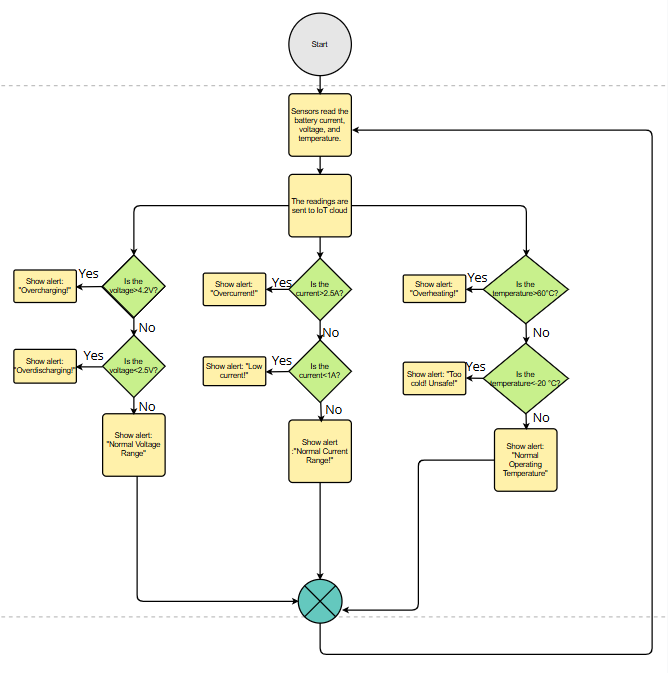

B.Tech, Instrumentation & Control Engineering
National Institute of Technology, Tiruchirappalli
ROBOTICS · AUTONOMOUS SYSTEMS · PHYSICAL AI
Control. Perception. Learning.
I’m a final-year Instrumentation & Control Engineering student at National Institute of Technology, Tiruchirappalli, interested in how machines sense, understand, decide, act and learn through feedback.
My work explores that loop through guidance, navigation & control (GNC), autonomous navigation, sensor fusion, computer vision, reinforcement learning and simulation-based validation.
FOCUS AREAS

ACADEMIC BACKGROUND

National Institute of Technology, Tiruchirappalli

Chennai, India
INDUSTRY EXPERIENCE
Seaconvoy Systems Engineering Pvt. Ltd. · Chennai
Digital Twin Simulation · Software-in-the-Loop (SIL) · ROS 2 · Gazebo / VRX · GNC · LOS Guidance · LiDAR · Stereo Vision · SAC · TD3 · Simulation V&V
ENGINEERING WORK
IN DEVELOPMENT · AUTONOMOUS NAVIGATION
Geospatial-intelligence and autonomous UAV navigation stack in ROS 2 and PX4. A U-Net with a ResNet-34 encoder performs nine-class semantic terrain segmentation from OpenEarthMap aerial imagery and supports safer landing-region selection using terrain class, semantic confidence and spatial clearance.
The selected region becomes a ROS 2 navigation goal integrated with LiDAR perception, occupancy mapping, EKF state estimation, A* planning and PX4 closed-loop mission execution. The architecture shares core perception → estimation → planning → control building blocks with autonomous-vehicle and ADAS stacks, implemented here on a UAV simulation platform.





COMPUTER VISION · FACULTY-GUIDED · JUL — NOV 2024
Dual-stage YOLOv11 inspection pipeline for bare-PCB fabrication and populated-PCB assembly defects using 1,698 images across 10 classes. Stage 1 reached 94.88% precision; Stage 2 reached 91.33% recall; overall mAP@0.5 was 91.12% at 78.5 FPS.


EMBEDDED SYSTEMS · FACULTY-GUIDED · AUG — NOV 2025
ESP32-S3 battery monitoring and fault-response architecture using voltage, current and temperature sensing. A local finite-state machine keeps safety decisions at the edge with sub-100 ms local fault response. Evaluated 13 scenarios spanning real-time overcharge simulation and synthetic fault injection.
PUBLICATIONS & RESEARCH
Research extending my ASV work toward safe reinforcement-learning-based autonomous navigation in multi-vessel environments, combining recurrent steering and speed PPO policies, a joint residual policy, receding-horizon predictive safety filtering and progress-aware selection among already-admissible actions.
Simulation-validated. Hardware-in-the-loop and sea-trial validation are currently under testing. Extended research in progress.
Recurrent PPO · LSTM · Predictive Safety Filtering · Residual Policy Learning · COLREGS-Aware Navigation · CPA / TCPA · Multi-Vessel Navigation · Safety-Critical Autonomy
CREDENTIALS
NPTEL · IIT Kanpur · Elite · 91% · Jan — Apr 2026
View certificate ↗Google Developer
University of California, Irvine · Coursera
View certificate ↗Cognitive Class · IBM Developer Skills Network · May 13, 2025
View certificate ↗FOUNDATION & TOOLSET
Control Systems · Process Control · Signals & Systems · Digital Signal Processing · Sensors & Transducers · Industrial Instrumentation · Analytical Instrumentation · Optical Instrumentation · Biomedical Instrumentation · Electrical & Electronic Measurement · Analog Electronics · Digital Electronics · Microprocessors · Microcontrollers · Embedded Systems · Robotics · Linear Algebra · Coordinate Transformations · Kinematics · State Estimation · PLC · SCADA · DCS
GET IN TOUCH
I’m interested in opportunities and conversations around robotics, autonomous systems, reinforcement learning and Physical AI.